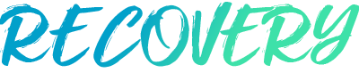

가치경영
value based management
사회적가치
밝고 따뜻한 사회를 만들기 위해 기업의 사회적 책임 을 다하겠습니다
-
지속가능경영아이콘
지속가능경영
동아제약은 2020년 4월, 지속가능경영을 경영 패러다임으로 우선하고 사회적가치창출의 선순환 구조를 구축하고자 사회적가치위원회를 출범하였습니다.
-
슬로건아이콘아이콘
슬로건
‘회복(Recovery)’코로나19로 인한 우리 사회의 다양한 회복 캠페인을 진행하고 있습니다.
-
폐의약품수거아이콘
폐의약품수거
올바른 폐의약품의 폐기를 위한 ‘폐의약품 수거 캠페인’을 핵심전략과제로 선정, 대∙내외 이해관계자 등과 사회적가치를 함께 창출하고 있습니다.
슬로건
2020년 4월 사회적가치위원회 출범 이후, 동아제약은 회복(Recovery) 슬로건을 바탕으로 회복 캠페인과 활동을 진행하고 있습니다. 특히, 코로나19 팬더믹으로 인하여 내적∙외적 우리 모두의 회복이 필요한 상황이며, 회복은 사회적가치 측면에서 불평등과 불합리에 의한 심리적 상처의 치유 의미도 내포하고 있습니다. 앞으로도 우리 사회의 다양한 회복 캠페인을 전개함으로써, 사회적 가치창출을 위해 최선을 다하겠습니다.
동아제약은 2020년 4월, 지속가능경영을 경영 패러다임으로 우선하고 사회적가치창출의 선순환 구조를 구축하고자 사회적가치위원회를 출범하였습니다. 대표이사 사장이 위원장을 맡아 지속가능경영 전략과 리더십을 표명하고, 각 임원급 관리자는 소비자(CCM), 환경/산업안전/보건(HSE), 공정운영, 정보보호, 친환경, 사회공헌, 인권정책 등의 협의회 조직을 통해, 가치 창출활동에 나서고 있습니다. 더불어, ‘회복(Recovery)’ 이라는 슬로건을 선정하여, 코로나19로 인한 우리 사회의 다양한 회복 캠페인을 진행하고 있습니다. 동아제약은 2020년 4월, 지속가능경영을 경영 패러다임으로 우선하고 사회적가치창출의 선순환 구조를 구축하고자 사회적가치위원회를 출범하였습니다. 대표이사 사장이 위원장을 맡아 지속가능경영 전략과 리더십을 표명하고, 각 임원급 관리자는 소비자(CCM), 환경/산업안전/보건(HSE), 공정운영, 정보보호, 친환경, 사회공헌, 인권정책 등의 협의회 조직을 통해, 가치 창출활동에 나서고 있습니다. 더불어, ‘회복(Recovery)’ 이라는 슬로건을 선정하여, 코로나19로 인한 우리 사회의 다양한 회복 캠페인을 진행하고 있습니다.